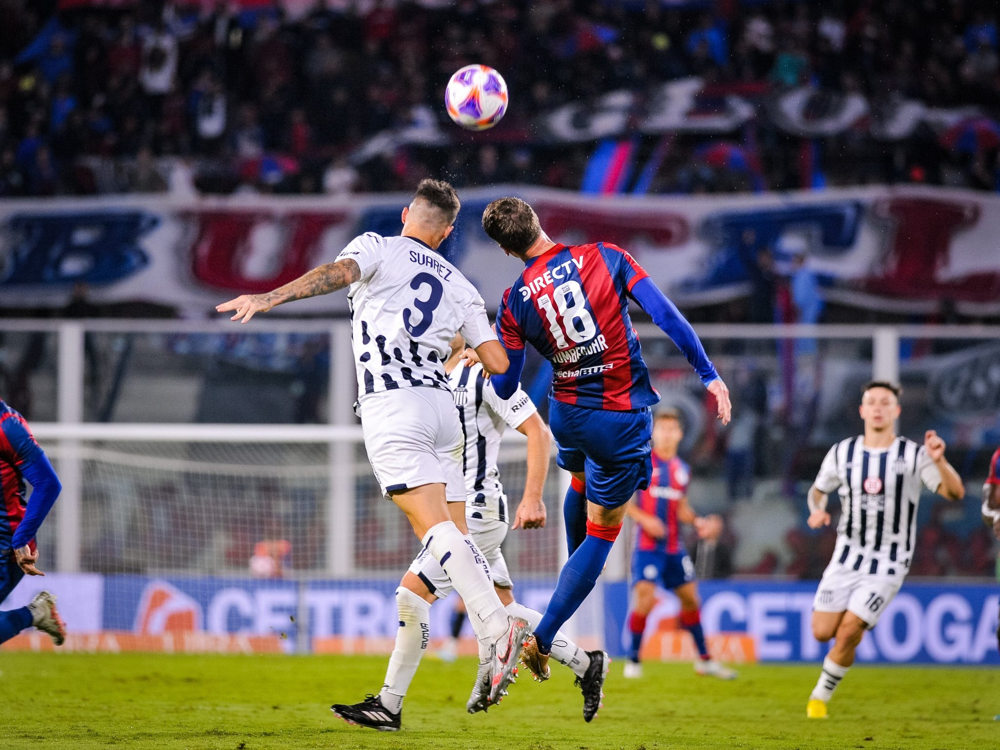
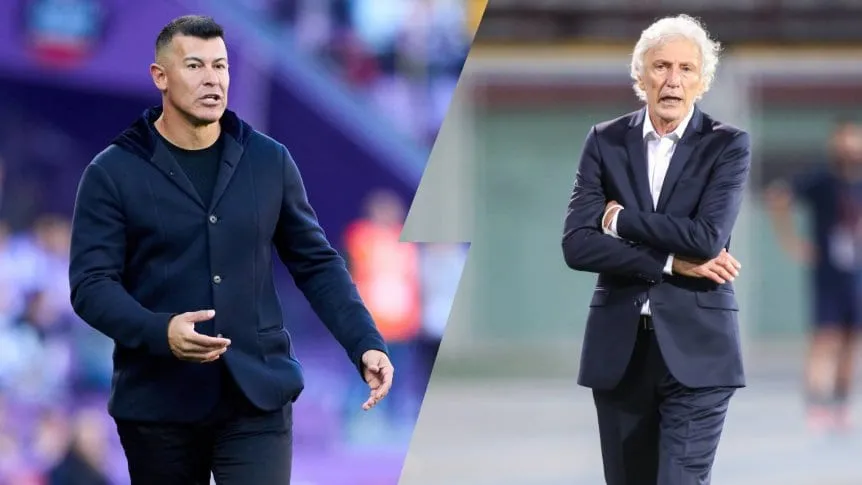
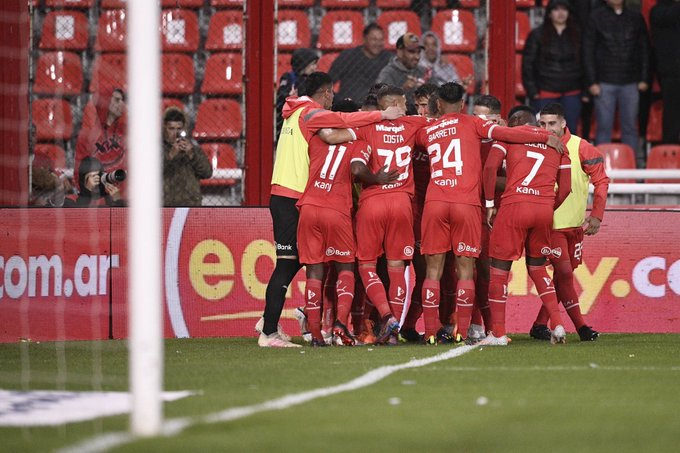
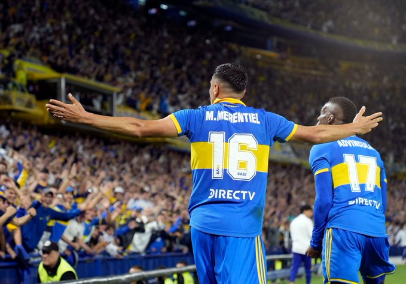

Ultimas Noticias del Futbol
Se conocio el sorteo de los grupos de la sudamericana y la libertadores
Se definieron los grupos de la Copa Libertadores y de la Sudamericana: Boca Juniors tendrá una zona accesible y River Plate enfrentará duros rivales


En un partido de ida y vuelta, San Lorenzo empató con Talleres
Ambos se ilusionaban con seguir el andar de River, imparable en esta Liga Profesional. Pero en la noche de este domingo en Córdoba, Talleres y San Lorenzo firmaron un 0-0 que los alejó un poco del líder aunque fue un duelo vibrante que pudo haber caído para cualquiera de los dos lados.
¿Cuando se juegan los cuartos de champions?

Los partidos de ida tendrán lugar el martes 11 y el miércoles 12 de abril, y los de vuelta el 18 y el 19 de abril. Las semifinales serán los días 9/10 y 16/17 de mayo, y la final el sábado 10 de junio
Boca se reunió con dos entrenadores: horas claves para definir el DT
Con el hermetismo que reina en el Xeneize, Juan Román Riquelme se juntó con dos candidatos y más temprano que tarde se conocerá la decisión. José Pékerman y Jorge Almirón pican en punta.
Lo cierto es que Mariano Herrón no será ratificado en el cargo, como lo hicieron anteriormente con Sebastián Battaglia y Hugo Ibarra, y terminará su interinato cuando haya un nuevo entrenador. En principio, José Pékerman y Jorge Almirón son los nombres que pican en punta, pero por el hermetismo que se maneja en Boca no consta que sean ellos con los que se juntó Riquelme.
El Rojo cortó la racha maldita
Independiente, con dos goles de Cuateruccio por penales bien cobrados, ganó después de 12 partidos en la Liga Profesional. ue un enorme desahogo. Una explosión. Una descarga después de días de tensión acumulada. Independiente volvió a sonreír en la Liga Profesional luego de 63 días. El equipo de Ricardo Zielinski, que marchaba anteúltimo, superó a Belgrano y consiguió tres puntos imprescindibles en su lucha por espantar los fantasmas que habían comenzado a atemorizar a todo el Mundo Rojo.
Boca le ganó a Racing un partido bien caliente antes del Súperclasico
El equipo de Almirón venció al de Gago por 3-1 con tantos de Payero, Fernández y Merentiel. Reniero descontó para la Academia. Los dos terminaron con diez hombres.os goles en una ráfaga, intensidad total. Concentración. Un Boca desconocido por lo voraz, por lo distinto que fue a los últimos Boca, a los de Ibarra, Battaglia y más allá. Advíncula de 7, un Villa bis igualmente incisivo, que vale preguntarse por qué no jugó ahí antes. Un Boca que peleó siempre las divididas, que fue duro para los mano a mano defensivos, equipo corto e intenso, dinámico y hambriento, solidario también. El Boca de Almirón finalmente vio la luz.